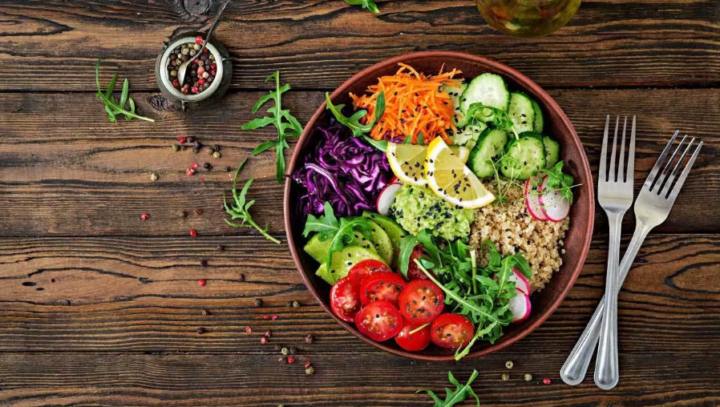
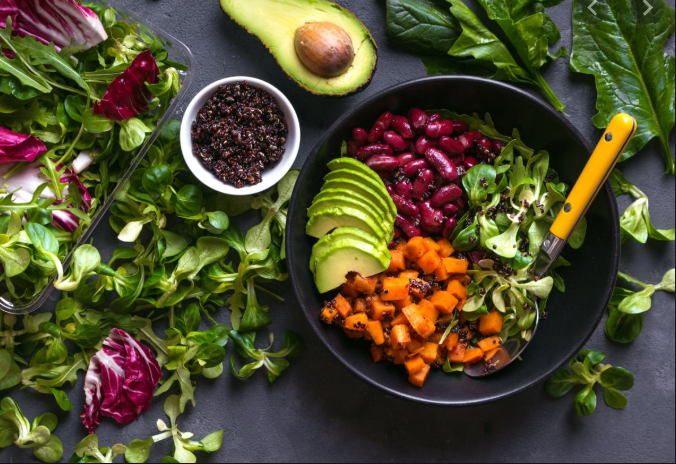
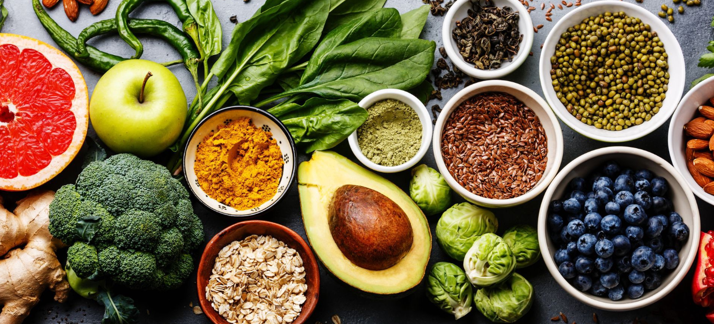

We are wholly commented to sourcing the very best ingredients we can find and preparing them by hand. Behind each veggie-filled dish is a story that starts long before that first bite. It all begins with like-minded people we love—those who go the extra mile to grow the best ingredients out there. Once those fresh ingredients reach our kitchen, we take our time to make each dish right.
 Every choice we make—about who we work with, what we serve, and what we stand for—affects the bigger picture: the health of the planet. Nutrient-rich soil reduces the need for pesticides and synthetic fertilizers, buying locally reduces vehicle emissions from transportation. As we strive each day to be better, we keep in mind that everything is connected.
We are GOOD for the earth. We aim to be zero waste, and use carbon neutral products. We compost everything but our boxes and bottles, and use smart and reused building materials.Looking at all of the fast-food choices today, we wanted a place where we could eat healthy food every day and eat with purpose.We are GOOD for you. Our filling dishes carry as many organic and local goods as seasonally possible. Our dressings and sauces are low fat and gluten-free.
We've always done things differently, both in and out of our restaurants. Check out how we're changing the face of fast food, starting conversations, and directly supporting efforts to shift the future of farming and food. We hope you'll join us as we continue to learn, evolve, and shape what comes next on our mission to make better food accessible to everyone.